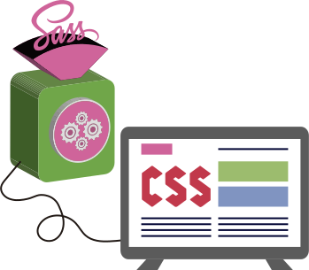
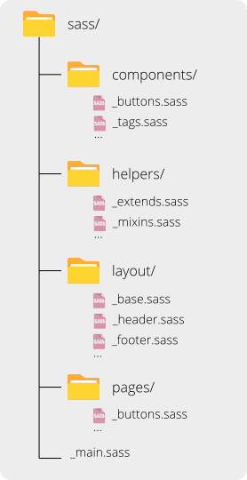

O que é isso, rapaz?
Provavelmente, você já ouviu falar sobre pré-processadores de CSS. Pois bem, o SASS é um pré-processador que se vende como o mais maduro, estável e poderoso do mundo.
Não sabe o que é um PRÉ-PROCESSADOR?
Bom... É um programa que recebe um texto e efetua conversões léxicas nele.
Tá. Imagine um texto escrito em português com muitas gírias, e que um software foi lá e transformou ele em um texto em português formal, traduzindo todas as gírias.

Sim, e é bom mesmo?
Aí é você quem vai dizer! Mas se ligue nas vantagens:
- Reduz a repetição de código (DRY na veia! Herança! Funções!)
- Fácil manutenção (Variáveis! Funções! :D)
- Facilita o versionamento (0,001% de chance de conflito)
- Reduz o tempo de desenvolvimento (é menos coisa pra escrever, mô fio)
MAASS... Nem tudo são flores. Desvantagens:
- Não gera um css tão bom quanto um humano poderia gerar. (Mais linhas no css compilado).
E o que é que precisa pra começar a usar?
Aaah, mermão! Sabia que você ia se interessar. Pra lançar no SASS, você vai ter que instalar ele na sua máquina primeiro. E pra isso você vai ter que instalar o Ruby.
Aí você pode fazer o seguinte:
$ sudo apt-get install ruby-full
$ sudo su -c "gem install sass"
Ou utilizar um gerenciador de versão para o Ruby. Como o RVM:
$ sudo apt-get install curl
$ gpg --keyserver hkp://keys.gnupg.net --recv-keys 409B6B1796C275462A1703113804BB82D39DC0E3
$ \curl -sSL https://get.rvm.io | bash -s stable --ruby
$ source /home/seuusuario/.rvm/scripts/rvm
$ rvm use 2.3 --default
$ gem install sass

Agora é mão na massa, Fera ;)!
Para que o seu código realmente se encaixe nas vantagens que o SASS traz, é importante que você crie uma estrutura de pastas que facilite o seu trabalho. A recomendação é a seguinte:
-
Components: Aqui você vai guardar, separando por tipo, tudo o que pode ser reutilizado nas páginas como componente individual. Exemplo: botões, tags, estilos para slideshow, modals, etc.
-
Helpers: Esse é o lugar das coisas que vão te ajudar a não se repetir. Como por exemplo: mixins, extends, etc.
-
Layout: Aqui vai tudo o que é básico para o seu layout. É em arquivos dessa pasta que você vai poder definir coisas como: o tamanho das sections, a cor dos a, o estilo do menu e da footer, os elementos textuais, e afins.
-
Pages: Apesar de tentarmos generalizar muita coisa nas outras pastas, cada página do seu site pode ter uma característica que seja muito particular. É aqui que você vai estilizar essas particularidades, de preferência, criando um arquivo para cada página.
Mixins? Extends? QUAL FOI?
Pois é, cara. São essas novidades que vão te ajudar a 'codar' css com velocidade.
MIXINS
Algumas coisas são muito chatas de escrever em CSS, especialmente quando se trata daqueles prefixos do CSS3. Uma mixin funciona como uma função void em linguagens de programação. Ela permite fazer grupos de declarações CSS que você deseja reutilizar em todo o site. Você pode inclusive passar valores para tornar a sua mixin mais flexível.
=transition($transition: all, $time: 0.2s)
....-webkit-transition: $transition $time
....-moz-transition: $transition $time
....transition: $transition $time
MIXIN criada, é só utilizar.
.btn
....+transition()
....
.menu
....+transition(background, 0.6s)
....
EXTEND / HERANÇA
Este é um dos recursos mais úteis do Sass. Usando @extend é possível compartilhar um conjunto de propriedades CSS de um selector para outro, criando uma relação semelhante ao conceito de herança em POO, porém mais simples. Ela ajuda a manter o seu Sass limpo.
.btn
....background-color: #FFF
....border-radius: 3px
....border: 1px solid
....cursor: pointer
....display: block
....margin: 15px
....padding: 6px 20px
....
Criou, é só herdar, mermão!
.btn-success
....@extend .btn
....background-color: #70A649
....color: #FFF
Percebeu que SASS é estilo, né?
Alguns detalhes sobre SASS:
-
Você não vai precisar de chaves
({}), nem de ponto-e-vírgula (;).
-
É possível aninhar seletores, ids, e classes.
-
Você vai poder utilizar variáveis.
Variáveis e aninhamento é?
VARIÁVEIS
Pense de variáveis como uma maneira de armazenar informações que você deseja reutilizar em todo o estilo. Você pode armazenar coisas como cores, pilhas de fonte, ou qualquer valor CSS que você quiser reutilizar. Sass usa o símbolo $ para declarar uma variável. Aqui está um exemplo:
$sass-pink: #CF649A
$font-stack: Helvetica, sans-serif
Criou a varável? Utilize-a.
.box
....background-color: $sass-pink
....font: 100% $font-stack
ANINHAMENTO
Ao escrever em HTML, você já deve ter percebido que ele tem uma hierarquia aninhada e visual clara. Já o CSS não tem nada disso.
Sass permite que você aninhe seus seletores CSS seguindo a mesma hierarquia visual do HTML (Um dentro do outro).
Fique ligado, porque regras excessivamente aninhadas irão resultar em um CSS muito específico. Isso pode ser muito difícil de fazer a manutenção, e é geralmente considerado uma má prática.
header
....background-color: $sass-pink
....color: #FFF
....height: 60px
....padding: 0 7%
....width: 100%
....
....ul
........float: right
........list-style: none
........margin: 0
........padding: 0
....li
........display: inline-block
........padding: 20px
Muito massa né? Isso vai gerar o seguinte CSS
header {
....background-color: #CF649A
....color: #FFF
....height: 60px
....padding: 0 7%
....width: 100%
}...
....
header ul {
....float: right
....list-style: none
....margin: 0
....padding: 0
}...
....
header li {
....display: inline-block
....padding: 20px
}...
....
Mas não para por aí, você ainda pode aninhar fazendo coisas como:
.btn
....background-color: #FFF
....border-radius: 3px
....border: 1px solid
....cursor: pointer
....display: block
....margin: 15px
....padding: 6px 20px
....
....&-success
........@extend .btn
........background-color: #70A649
........color: #FFF
Isso vai gerar o seguinte CSS:
.btn, .btn-success {
....background-color: #FFF
....border-radius: 3px
....border: 1px solid
....cursor: pointer
....display: block
....margin: 15px
....padding: 6px 20px
}...
....
.btn-success {
....background-color: #70A649
....color: #FFF
}...
Bom... ainda falta algo.
Você deve ter percebido que o que já foi dito não é tudo. Para que a estrutura sugerida funcione e você possa aplicar o aninhamento, as variáveis, mixins e a herança, você vai precisar de mais um recurso do SASS chamado 'Parciais'.
Parciais permitem que você inclua o arquivo SASS dentro de outro. Para isso basta que seu arquivo comece com _ (underline) e seja .sass ou .scss.
Você vai incluir todos os seus arquivos SASS no arquivo main.sass. Ele deve ficar semelhante a isso:
/* HELPERS
@import helpers/mixins
/* LAYOUT
@import layout/base
@import layout/footer
@import layout/header
@import layout/typography
/* COMPONENTS
@import components/buttons
É isso mesmo que você ou viu! Não precisa utilizar o _ nem a extensão do arquivo. O SASS vai entender.
Aaahhh, se ligue!
Você vai ter que compilar também. Você pode fazer isso de duas formas:
- Simplesmente compilando:
tutos@ijr /var/www/html/project $ sass sass/main.sass assets/css/main.css
- E compilando em tempo de desenvolvimento:
tutos@ijr /var/www/html/project $ sass --watch sass/main.sass:assets/css/main.css
E você ainda pode gerar um arquivo minificado. É só completar os comandos acima com --style compressed.